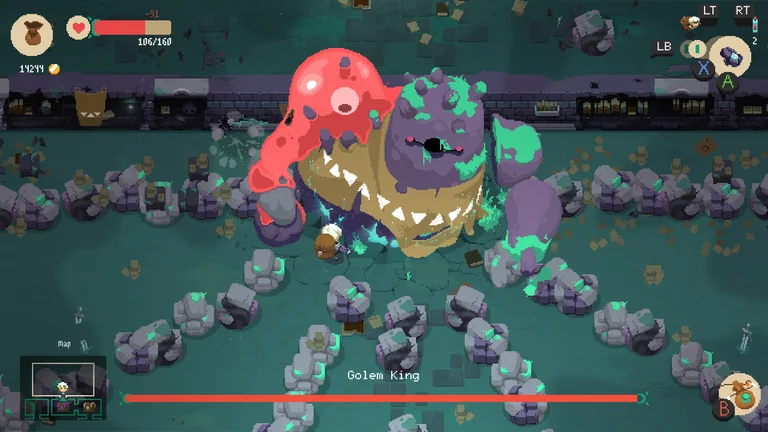

Netflix sigue con su plan de expandir, mes a mes, su catálogo de juegos mobile gratuitos para sus suscriptores. Desde que se lanzó este apartado, la plataforma mantuvo el ritmo de incorporar nuevas propuestas, que van desde opciones más casuales hasta un shooter en un entorno plagado de zombies. Hace pocos días se reveló que la empresa estaría pensando llegar a 50 sus títulos para fin de año, como una estrategia firme para sostener a sus usuarios.
Como parte de sus anuncios de mayo, anticiparon que van a sumar tres juegos más, que van a incluir la adaptación de un juego de cartas -que también se convertirá en una serie- y dos títulos que van a pasar a estar disponibles en celulares después de un recorrido por otros dispositivos.
Townsmen - A Kingdom Rebuilt

Este juego de estrategia, que actualmente está disponible en PC (a través de Steam) y consolas, va a llegar a dispositivos mobile a través del catálogo de Netflix. Los jugadores van a tener que acompañar y planificar el crecimiento de una población, desde que es una aldea hasta que se convierta -si todo sale bien- en una gran ciudad medieval.
No solo van a tener a disposición una gran variedad de viviendas diferentes para construir, sino que también contarán con un abanico amplio de trabajos para los “súbditos”. Pero, además, en este juego es primordial contemplar todo el tiempo que las necesidades de los habitantes estén satisfechas -desde la alimentación hasta espacios de entretenimiento- y que sean felices. Todo eso permitirá recaudar impuestos para que siga creciendo la ciudad. Como si eso fuera poco, además van a tener que prestar atención a las catástrofes que puedan afectar el lugar.
Exploding Kittens
 (Netflix)
LEER MÁS: Netflix quiere crecer de la mano de los videojuegos y ofrecerían 50 antes de fin de año
(Netflix)
LEER MÁS: Netflix quiere crecer de la mano de los videojuegos y ofrecerían 50 antes de fin de año
En este caso se da una situación especial, porque el juego no llegará solo, sino que será la antesala al lanzamiento de una serie basada en el mismo juego de cartas. La versión mobile va a mantener la dinámica del juego que la inspira: los jugadores tienen que robar cartas y el objetivo es evitar el “gatito explosivo”.
Sin embargo, la adaptación va a contar con dos carta exclusivas, para darle una variante a la experiencia. La carta Radar va a servir para revelar la posición del gatito explosivo más cerca a la parte superior del mazo. Flip Flop, por su parte, revierte el orden de las cartas en el mazo. Pero eso no va a ser todo y anticiparon que más adelante van a revelar otras cartas con funciones especiales, que también van a poder verse en la serie animada. Además, se podrá jugar en solitario o entre varios jugadores.
“Nuestro objetivo es ofrecerles a nuestros miembros entretenimiento de calidad que les encante y que puedan disfrutar en cualquier formato, ya sea un juego o una serie animada. Mientras vamos expandiendo nuestro catálogo de juegos, es un placer asociarnos con el equipo digital de Exploding Kittens y Dire Wolf Digital para dar vida a este juego maravilloso para todas las edades, que además incluye algunas actualizaciones exclusivas para nuestros miembros”, dijo Leanne Loombe, directora de Juegos Externos de Netflix.
Moonlighter

Hace solo unos días, a través de sus redes sociales, 11 bit studios anticipaba que Moonlighter -su título de acción RPG con elementos roguelite- va a contar pronto con una versión mobile a través del apartado de videojuegos de Netflix.
En el juego los usuarios tienen que ponerse en la piel de Will, un comerciante que sueña con convertirse en héroe. Más allá de gestionar su propia tienda en la aldea llamada Rynoka -que van a poder mejorar y sumar empleados-, los jugadores también van a poder derrotar a diferentes enemigos y jefes a través de las que presentan como mecánicas de combate complejas. Además, podrán colaborar para hacer crecer el poblado en el que viven y acceder a un sistema de fabricación y hechizos que es clave para el progreso en el juego.